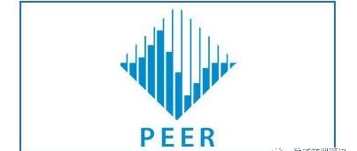

美国太平洋地震研究中心转载清华大学土木系关于阿拉斯加地震的分析报告

北京时间2018年12月1日1时29分（美国当地时间11月30日8时39分），美国阿拉斯加州安克雷奇(Anchorage, AK)市附近发生一次Mw7.0级地震（美国地调局USGS测定），震中距离阿拉斯加州最大城市安克雷奇只有十余公里，给安克雷奇市造成一定破坏。
在地震发生后数小时内，清华大学土木系防灾所利用其研发的城市抗震弹塑性分析方法，根据阿拉斯加当地建筑情况及美国工程强震数据中心（CESMD）实测的地面运动记录，分析了本次安克雷奇7.0级地震可能造成的建筑破坏情况（图1）。该分析结果发布后得到广泛关注，美国太平洋地震研究中心（PEER）在其阿拉斯加地震快讯中转载了该分析报告（图2）。
本次阿拉斯加地震实测地面运动强度较大（图3、图4），但是由于安克雷奇市的建筑抗震设防能力较好，因此实际建筑震害并不严重。

(a)

(b)
图1 清华大学土木系防灾所在震后给出的安克雷奇市区建筑破坏程度分布评估结果
 图2 美国太平洋地震工程研究中心（PEER）转载清华大学分析报告
图2 美国太平洋地震工程研究中心（PEER）转载清华大学分析报告

图3 阿拉斯加地震典型地面运动记录与近年来我国典型强震记录对比

图4 阿拉斯加地震典型地面运动记录反应谱与我国抗震设计标准对比
清华大学土木系防灾所利用城市抗震弹塑性分析方法和实测地震记录，近2年来已完成了20余次国内外地震后的破坏力应急近实时分析工作（图5）。未来将进一步研究并完善该技术在震后应急领域的应用。

图5 清华大学土木系防灾所近2年来完成的发生在中国的地震应急近实时分析工作
相关研究
长按识别二维码，关注我们的科研动态